Lucy MacLean
ルーシー・マクレーン
黄金律よ、このクソ野郎」
― ルーシー、グールに対して
ルーシー・マクレーンは、Fallout
TVシリーズの主人公であり、グールやマキシマスと並ぶ中心人物の一人である。
ハンク・マクレーンとローズ・マクレーンの娘であり、ノーム・マクレーンの姉妹で、かつてのロサンゼルスに位置する「三つのVault」のうちVault 33の生涯にわたる居住者である。
2296年、モルデイヴァーという謎の女性が率いるレイダーの襲撃で父が誘拐された後、父を救うためにウェイストランドへの任務に乗り出す。
経歴
ルーシーは2270年代半ばにVault 33でハンクとローズ・マクレーンの間に生まれ、その後弟のノーマンが誕生した。
ルーシーが思春期の頃、母ローズは地上が居住不可能だというVaultの教義に疑問を抱くようになった。
夫に懸念を伝えたものの無視され、子供たちを連れてVault 33を脱出した。
ハンクはこれを子供たちを危険にさらす行為と見なして激怒した。
それは身体的リスクだけでなく、荒野の暴力や生存本能に子供たちが影響されることでVault-Tecの使命が台無しになるという思想的な懸念でもあった。
Vaultを離れた後、マクレーン家はニュー・カリフォルニア・リパブリックの首都シェイディ・サンズに辿り着き、ローズはリー・モルデイヴァーと親密な関係を築いた。
しかし、ルーシーもノームもこの時期のことをほとんど覚えていない。
幼すぎて完全な記憶を形成できなかったようだ。
それでもルーシーは、母が太陽の下の野原で遊ばせてくれたことをぼんやりと覚えていたが、最終的にそれはVault 33の農場の照明だったと結論づけた。
シェイディ・サンズに来た後のある時点で、ハンクがローズを見つけたが、彼女は一緒に帰ることを拒否した。
代わりにハンクは子供たちを連れ戻してVault 33に帰り、ルーシーとノームには母が「77年の疫病」の犠牲者として亡くなったと信じ込ませた。
その後の2283年、ハンクはシェイディ・サンズの路上に核兵器を配達させ、遠隔起爆させることでこの戦後国家を壊滅させた。
その直後、娘の求めに応じて就寝前の物語を読み聞かせに行った。

Vault 33で育ったルーシーは、比較的幸福で気楽な特権的生活を送っていた。
しかし、Vaultとコミュニティの維持と福祉にできる限り貢献していた。
彼女の既知の実績には、若手配管工協会（親友のステフ・ハーパーと共に参加、ハーパーはVault 31からの移住者）、体操クラブ、フェンシングチームC、中級体育、射撃術のメンバーシップが含まれる。
パワーアーマーの仕組みに関する基本的な知識も持っていた。
ルーシー自身によると、主な情熱は倫理に焦点を当てたアメリカ史のVaultの子供たちへの教育であった。
家族とのプライベートな時間は、父と映画を観たり、庭いじりをしたり、父とノームとのファミリー・ブッククラブに参加したりして過ごした。
ルーシーは、書籍（『戦争と平和』や『西部戦線異状なし』など）や映画から学んだこと、あるいは父から教わったこと以外、外の世界についてほとんど知識を持たずに育った。
直系家族以外では、従兄弟のチェットと親密に交流しており、「10年間の従兄弟同士の付き合い」を詳細不明の形で行っていた。
こうしたカジュアルな親密関係は子供のうちはコミュニティで許容されているが、従兄弟同士の結婚は認められていない。
Fallout TVシリーズ
シーズン1
「終末」

物語の開始時、ルーシーはVault 33の統治評議会（ウッディ・トーマス、ベティ・ピアソン、レジ・マクフィー）に結婚申請書を提出し、すぐに承認される。
Vault 32の住人モンティとの政略結婚である。
初夜の後、ルーシーは部屋の外から悲鳴を聞く。
警戒してPip-Boyでモンティをスキャンすると、彼が被曝しており地上のレイダーであることが判明する。
モンティの攻撃を生き延び、最終的に首を刺して意識不明にする。
スティムパックで自身を治療し、レイダー襲撃中に麻酔銃で武装する。
アトリウムでの戦闘中、ルーシーはノームを床下収納に隠し、父がリンゴの水桶でモンティを溺死させるのを目撃する。
Vault 32のオーバーシーアを名乗っていたリー・モルデイヴァーがハンクを拉致する。

ルーシーは緊急評議会会議で、父を救出するための捜索隊の編成を提案する。
Vault評議会は新たに得た権限を手放したくないため、Vaultのドアを開けることを拒否する。
じっとしているよりも、他の者がいない隙を見てルーシーは脱出の機会を掴む。
見張り役のノーム、エレベーターの鍵を開けて外部ドアの解錠を手伝ったチェットの助けを借りる。
チェットは外が危険だから一緒に行くと主張するが、ルーシーは彼を麻酔銃で眠らせる。
ノームと抱擁を交わした後、レジとデイヴィーの制止の声を無視してVaultを後にする。
「ターゲット」

1日かけてウェイストランドを旅した後、ルーシーは夜に休息を取る。
焚き火のそばで眠っていると、エンクレイヴの脱走者シギ・ウィルジグと出会う。
彼はモルデイヴァーの冷温核融合プロジェクトのために貴重なアーティファクトを輸送していた。
ウィルジグは荒野の危険を警告し、帰るよう促してから夜の闇に消える。
翌日、ルーシーはフィリーの集落に到着する。
Vault居住者を世間知らずと見なす店主マー・ジューンに笑われ見下される。
ウィルジグが町に到着してルーシーと再び言葉を交わすと、懸賞金目当てでウィルジグを追跡しているグールに遭遇する。
グールがウィルジグの左足を撃ち飛ばし、立ち向かおうとする複数のガンファイターを殺害する銃撃戦が勃発する。
ウィルジグの犬CX404が主人を守ろうとして刺された後、ルーシーは平和的に事態を収拾しようとするが失敗する。
グールがルーシーに一歩近づくと、麻酔ダーツを撃つが効果がなかった。
しかしマキシマスがパワーアーマーで到着し、グールの射撃からルーシーを突き飛ばして守り、グールを寄せ付けない間にルーシーとマー・ジューンがウィルジグを救おうとする。
グールとの事態が収まった後、マー・ジューンはモルデイヴァーが自分の顧客であることをルーシーに明かす。
ルーシーは負傷したウィルジグをウェイストランドを横断して連れて行こうとするが、彼は足の傷に屈しシアン化物の錠剤を飲む。
彼の死後、ルーシーは彼の要請に従い、チェーンソーで首を切り落として頭部を持って行く。
「頭部」

ルーシーはウィルジグの頭部を持って旅を続け、浸水したハリウッド・ブールバードに立ち寄る。
子鹿にエサを与えるが、ガルパーに丸呑みされてしまう。
ガルパーがルーシーを攻撃するが、麻酔銃を使って逃れる。
ガルパーが頭部を飲み込んで泳ぎ去る。
追跡する前に、グール（CX404を使ってウィルジグの匂いを追跡していた）が追いつき捕らえる。
グールはルーシーを水辺の滑車に縛り付け、ガルパーをおびき出すための餌として繰り返し水中に沈める。
ガルパーをおびき出すことに成功するが、攻撃が速すぎて対処できず、ルーシーはガルパーに飲み込まれそうになった際にグールの鞍嚢を使ってそれを防ぐが、その過程でグールの吸入バイアルを破壊してしまう。
ルーシーの行動に怒ったグールは、新しいバイアルを見つけるまでルーシーを捕虜にして連れて行く。
ガルパーが頭部を完全に消化する前に戻れると判断してのことだった。
「グールたち」

旅の途中、ルーシーとグールはグールの友人ロジャーに出会う。
ロジャーもグールだが、フェラル化の境界にいた。
友人がもう救いようがないと悟ったグールは、幸せだった時代を懐かしませてから射殺する。
ルーシーがグールの残虐さを非難すると、自分の姓が「マクレーン」であることを明かし、グールは彼女が妻の戦前のアシスタントの娘であることに気づく。
グールはルーシーにロジャーの遺体を肉のために解体するよう強制する。
その後しばらくして、ルーシーは絶望から被曝した水を飲む。
グールが咳き込んでいる隙に逃げようとするが、同じ場所に立ち止まるという無謀な判断をしたため捕まってしまう。
ルーシーはグールの右人差し指を噛みちぎり、グールは報復にルーシーの右人差し指を切り落とす。
グールはほどなくルーシーをスーパー・デューパー・マートに連れて行き、2ヶ月分のバイアルと引き換えにスニップ・スニップに引き渡す。
ミスター・ハンディに彼女が（欠けた指を除けば）完璧な状態であることを保証する。

スニップ・スニップはルーシーに丁寧に接し、欠損した指に代わる腐りかけの人差し指を外科的に接合する。
ルーシーは助けを求めるが、グールが自分を性奴隷にするために送ったのではないかと恐れていると告白する。
スニップ・スニップは衝撃と嫌悪感を示す。
実際には彼女の臓器を摘出するつもりだった。
ルーシーが行動を起こす前に、スニップ・スニップは麻酔ダーツを撃ち込み、ルーシーは意識を失う。
スニップ・スニップはルーシーをストレッチャーに縛り付け、ヒューイとスクワールのもとに連れて行く。
ルーシーはストレッチャーから脱出し、近くの除細動器でスニップ・スニップを感電させる。
その後、彼をテコにして自分と捕らわれたグールたちを解放しようとする。
ヒューイとスクワールはスニップ・スニップを巨大なエアコン程度にしか見ていなかったが、ルーシーが即席の武器で脅したため、彼女を行かせてグールたちの解放要求にも応じた。
しかし認知機能を失っていないグールだけの解放ではルーシーは満足せず、毒性のクレンザーで2人を脅して全員の解放を要求した。
彼らは従ったが、ルーシーはすぐにこの判断を後悔する。
フェラル化したグールたちが襲いかかってきたのだ。
フェラルたちがヒューイとスクワールを殺した後、まだ正気を保っていたマーサという名のグールだけが残ったが、彼女もルーシーに襲いかかりそうになり、10mmピストルを手に取って彼女を殺すことになった。
外に出ると、グールが地面に倒れ、マート内のバイアルが必要な状態で見つかる。
それまでの酷い扱いにもかかわらず、ルーシーはグールをマートのグールたちと同じ運命にさせまいと決意し、バイアルを渡してから立ち去る。
これは彼女が理想と現実の要求を融合させることを学んでいることを示している。
「過去」
グールからの解放と臓器摘出の危機の後、ルーシーは再びマキシマスに出会う。
マキシマスは従者のサディウスによって自分のアーマーに閉じ込められ、フュージョン・コアを抜かれていた。
数匹のラッドローチがアーマーに群がっていたため、ルーシーはハンドガンで吹き飛ばす。
バイザーを持ち上げることはできたが、放射線障害に苦しみ、マキシマスは自由にしてくれればラッドアウェイを提供すると申し出る。
ルーシーはマキシマスを解放し、倒れてしまう。
約束通り、マキシマスはルーシーの放射線障害を治療し、2人はサディウスを見つけてガルパーが吐き出した頭部を取り戻すために協力することを決める。

サディウスを追跡する途中、ルーシーはマキシマスと地上の情勢について話し、Vault居住者が地下に入ってから何が起こったのかを尋ねる。
橋に差し掛かると、2人の人食い人間ジェイヴィンとリンクに遭遇する。
彼らは殺害しようとするが、マキシマスがルーシーの銃を取り2人を射殺する。
その際にマキシマス自身も撃たれてしまう。
しばらく後、シェイディ・サンズの廃墟に辿り着く。
マキシマスはそこがかつて自分の故郷でブラザーフッドが引き取る前に住んでいた場所だと明かす。
Vault居住者なしに文明が地上に復活していたと聞き、ルーシーは衝撃を受ける。
地上に出て文明を再建するというVault 33の存在目的との矛盾に苦しむ。
やがてマキシマスの傷が見た目以上に深刻であることに気づいたルーシーは、医療物資を探しに行き、ホーソーン医療研究所を見つける。
建物内で物資を探している最中に2人共落とし穴に落ち、Vault 4の内部で目を覚ます。
「罠」
Vault 4に着地した後、ルーシーとマキシマスはバーディーに会い、Vaultの医療スタッフであるエドマンドソン医師とパウエル看護師がマキシマスの傷を治療する。
バーディーは地上の汚染物質からVaultを守るため、もうしばらく隔離に留まると説明する。
滞在中、マキシマスがルーシーにいい匂いがすると言い、ルーシーはこれを口説き文句と解釈してセックスを持ちかける。
ブラザーフッドで性教育を受けていなかったマキシマスは変だと答え、ブラザーフッドは性的関係を推奨していないと断る。
隔離を出た後、オーバーシーアのベンジャミンに会い、Vaultが破壊されたシェイディ・サンズの難民を受け入れていることを知る。
全階層が開放されているが、12階だけは例外であることも知る。
マキシマスはVaultがカルトだと感じて少し不快になるが、ルーシーは気にしない。
しかし、Vaultが「炎の母」という人物を崇拝していることにルーシーは恐怖を覚える。
その正体がリー・モルデイヴァーだと判明する。
ルーシーはVaultの12階に赴き、遺伝子実験について知る。
しかし見つかってしまい、脱出を試みるが捕らえられて拘束される。
「ラジオ」
捕らわれた後、ルーシーはホロテープでVaultで起きたことの詳細を知り、罰を受けるために皆の前に連れ出される。
処刑されると思いきや、実際にはVaultから追放されるだけで、物資を持たされて解放される。
一方、Vaultでの生活に順応していたマキシマスは、フュージョン・コアを奪い、回収してあったアーマーに装着してルーシーを救出する。
しかしルーシーが彼らは自分を解放するつもりだったと説明し、マキシマスは恥ずかしい思いをする。
2人はVaultを去るが、ルーシーはマキシマスにフュージョン・コアを返すよう説得する。
渋々ながらマキシマスは応じ、コアを以前落ちた落とし穴に投げ入れる。
フュージョン・コアの回収後、ルーシーは父を救出した後に一緒にVaultで暮らさないかとマキシマスを誘う。
マキシマスは自分の名前がタイタスではなくマキシマスであること、タイタス騎士は自分を脅してきた人物でそのまま死なせてパワーアーマーを奪ったことを告白する。
ルーシーも荒野での旅路でひどいことをしてきたと認め、マキシマスの過去を責めない。
2人は共に旅を続ける。

ついにサディウスと落ち合う。
サディウスは援軍と回収を要請しており、2人が近づくと防衛的になってブービートラップを誤って作動させ、首に穴が開くがすぐに治癒する。
マキシマスはサディウスがグール化し始めているのではないかと疑う。
ブラザーフッドに確実に殺されるとサディウスは苦悩する。
マキシマスは、ウィルジグの頭部と引き換えにブラザーフッドに戻ってサディウスを見つけ出さないようにすると提案する。
サディウスは同意して感謝し、去る。
マキシマスとルーシーはキスを交わしてそれぞれの方向へ向かう。
マキシマスはブラザーフッドに渡す偽の頭部を作り、ルーシーは本物の頭部を持ってモルデイヴァーのもとへ向かい父を救出する。
ルーシーはマキシマスにいつかVault 33で会いに来てほしいと伝える。
「始まり」
マキシマスと別れた後、ルーシーはモルデイヴァーの拠点であるグリフィス天文台に向かう。
メインの操作室に到着すると、モルデイヴァーがテーブルの横で待っており、隣には拘束されたフェラル・グールがいて、近くのケージに父がいた。
頭部を渡して父の解放を要求するが、モルデイヴァーは誘拐した理由を明かしてからでないと承諾しない。
モルデイヴァーはVault 31-33の真実を明らかにする。
ハンクはVault-Tecの幹部で、2世紀にわたって冷凍保存されていたのだ。
ルーシーの母ローズがそれを知り、ルーシーとノームを連れてVault 33を脱出し、モルデイヴァーと共にシェイディ・サンズに定住した。
しかしハンクがそれを知ると、シェイディ・サンズの破壊を画策し、何千もの罪なき人々を殺害し、ルーシーとノームをVault 33に連れ戻した。
モルデイヴァーは頭部に冷温核融合技術のカプセルが隠されていることを明かす。
これはモルデイヴァー自身が取り組んでいた研究で、無尽蔵のエネルギーを可能にするものだった。
アクセスコードを知っているハンクが必要だったのだ。
母の運命がかつて信じていた餓死ではなく、シェイディ・サンズへの核爆弾の放射線によってグール化したのだと知ったルーシー ― モルデイヴァーのテーブル脇のグールこそが母だった ―
は、ハンクにモルデイヴァーへコードを教えるよう強制する。

モルデイヴァーがコードを得て装置を起動しようとするが、ブラザーフッド・オブ・スティールが大軍で迫っていることに気づく。
ルーシーは天文台内に残り、マキシマスが彼女を見つけて父を解放する。
ルーシーは父がシェイディ・サンズ破壊に関与していたことをマキシマスに明かす。
激怒したマキシマスがハンクを攻撃しようとするが、ハンクに殴られて気絶させられる。
ルーシーは銃を拾いハンクに向けるが、心が砕け怒りに震えながらも引き金を引くことをためらう。
グールが到着し、ハンクの左頬をかすめる弾丸を放ち、妻と娘の居場所を要求する。
答える代わりに、ハンクは踵を返してパワーアーマーで飛び去る。
グールはルーシーにオリーブの枝を差し出し、ハンクを追跡する旅に同行しないかと誘う。
マキシマスの元に残ればブラザーフッドに殺される可能性が高いからだ。
ルーシーは苦しみを終わらせるために母を撃ち、グールの後を追うことを選び、マキシマスをブラザーフッドと共に残す。
去る前に、意識のないマキシマスにまた見つけ出すと告げる。
ルーシーとグールはハリウッド・フォーエバーの霊廟に立ち寄り、ドッグミートと再会し、ルーシーはライフルで武装してからハンクの追跡に出発する。
シーズン2
「イノベーター」
モハビ・ウェイストランドに入った後、2人の旅の物資が尽きてしまう。
ノバックの町まで辿り着くが、町はニック・ザ・プリックが率いるグレート・カーン・ギャングに占拠されていた。
ルーシーは物資を求めて外交的アプローチを主張するが、グールの計画が採用される。
ルーシーがグールをカーンズの長年の懸賞金目当てに引き渡し、キャップの報酬を受け取った後にグールを救出、カーンズ全員を排除して物資を手に入れるという作戦だった。
このような詐欺はノバック以前にも複数回行っていたことが示唆されている。
しかし、絞首台のグールを撃ち落とす段階になると、ルーシーは殺害計画を実行せず、交渉を試みる。
カーンズが申し出を拒否すると、ルーシーは元の計画に切り替えてグールを解放する。
2人は銃撃戦を開始し、ルーシーはディンキー・ザ・T-レックスの像から狙撃するが、明らかに致命傷にならない場所を狙っていた。
一方グールは容赦なく致命的な手段でカーンズを1人ずつ始末し、ルーシーは仲間の残虐な戦術に頭を振って苛立つ。
全カーンズを始末した後、2人とドッグミートはノバックを後にする。
ルーシー、グール、ドッグミートは平坦な砂漠を歩きながら口論する。
ルーシーがグレート・カーンズ強盗計画で敵を殺すことを拒んだことや、一般的にグールの目には足手まといに映っていることが原因だった。
やがてニュー・ベガスを見下ろす丘に到達する。
ルーシーはベガスの光景に圧倒される。
遠くから見ると、街は戦前の栄華からほとんど変わっていないように見えた。
グールは街の防空システムがミサイルの大部分を撃墜したと明かす。
しかしルーシーが「なぜ彼らはアメリカの他の場所にもそれをしなかったのか」と問うと、グールは「彼ら」など存在しない、ベガスが生き残ったのはロバート・ハウスというたった1人の男のおかげだと嘲笑する。
ニュー・ベガスへの道中、ルーシーとグールは旅を続け、ハンクが盗んだT-60パワーアーマーで押し潰した荒野の旅人の遺体を発見する。
さらに進むと、老婆グレッチが営む路傍のスープ屋台を見つける。
グールが脅す計画だったにもかかわらず、ルーシーは外交を試みさせる。
2キャップでグレッチの「ノミスープ」を買うが、一口飲んですぐに後悔する。
ハンクについて直接尋ねると、グレッチはハンクが来て息子を拉致し、おそらく殺したことを明かす。
ルーシーは同情を示そうとするが、グレッチは息子が自分に借金を返せないことだけを嘆く。
ルーシーはぎこちなく失った金銭への同情を示してから立ち去る。
グレッチの指示に従い、グールはルーシーに最終的に父を見つけたらどうするのかと問い、「正義」を求めるという主張を嘲笑する。
やがてハンクの重い足跡が廃墟のスターライト・ドライブイン・シアターへと続いているのを発見する。
グールが法なきウェイストランドで正義を求めることの合理性を問いただし、ルーシーはそう育てられたと反論する間に探索が進む。
グールは一瞬、自分の古い映画『犬連れの男3』が看板に載っているのを見て気を取られる。
一方ルーシーとドッグミートは足跡を追い続け、スクリーンディスプレイの破損箇所からVault 24の入口が露出しているのを発見する。
入る前に少し身だしなみを整えようとする。
Vaultの玄関ホールで、ルーシーは自分の母Vaultと比べて荒れ果てた状態に驚く。
グールに他のVaultを見つけた経験を尋ねると、家族の運命を知ることになるかもしれないという恐怖を常に抱いていたと語る。
ルーシーは以前のVault 4訪問での経験を共有するが、グールはVault 4は全Vaultの中では最良のケースだったと返す。
グールはルーシーをPip-Boyでエレベーターの電源を入れるよう誘導し、ハンクの足跡がVaultに入って出ていることを指摘する。
グールは床から共産主義のマークが入った帽子を拾い上げ、ルーシーに見せてからエレベーターで降りる。
下の階では、Vault 24の実験がブレイン・コンピュータ・インターフェース・チップを中心としたものだったことが判明する。
アメリカ人被験者に共産主義プロパガンダを浴びせて洗脳するという実験だった。
ルーシーはVaultのコンピュータネットワークを調査するが、父がリサーチデータのハードドライブを持ち去っていたことを発見する。
次に食べかすの跡を辿ると、シュガーボムの箱がテーブルに置かれたバックエンドの手術室に行き着く。
これはハンクがルーシーを呼ぶあだ名「シュガーボム」の箱だった。
物音でグレッチの息子の存在に気づく。
息子にはチップが埋め込まれており、ハンクはそれを使ってルーシーにメッセージを送る。
家に帰れ、追跡をやめろという内容で、最後にチップの出力を上げて男の頭が爆発し、2人は肉片を浴びる。
警告とその結末にもかかわらず、ルーシーはグールに父の罪を追い続けると宣言する。
「黄金律」
ニュー・ベガスへの道を再び歩き始め、ルーシーはグールの無礼さについて口論する。
水筒を頼む代わりにひったくるようなことだ。
家族を見つけた時、こんな風になった自分を家族は好まないだろうとまで言う。
チャールズ・ディケンズの作品を引用して優しさについて説教しようとする。
その旅路は近くの廃墟から聞こえる女性の助けを求める声に中断される。
グールは明らかな罠だと無視しようとし、助けを求める声を無視できないルーシーの「愚かさ」をたしなめるが、ルーシーが行くと渋々ドッグミートと共についていく。
アフォーダブル・アルのディスカウント病院の廃墟内で、ドッグミートは負傷した女性がいる部屋へ2人を導く。
グールは女性のチュニックに赤い×印があることを指摘し、「かなり西のほうまで来ているな」と意味深に述べるが詳細は語らない。
ルーシーはグールの忠告に反して最後のスティムパックを女性に使おうとする。
グールは「あいつらにはもったいない」と言いながら近くの負傷した男性に近づき、助け起こすと見せかけてボウイナイフで喉を掻き切る。
ルーシーが抗議すると、グールは男性の肉片を食べて吐き出し、死体を調べると毒の傷があることを突き止める。
その直後、建物の換気口に何かが這い回る音と隣室からの激しい音が聞こえる。
女性は「奴らが戻ってきた」と怯える。
間もなく数匹のベビー・ラッドスコルピオンが現れて攻撃を開始し、1匹がルーシーを地面に叩きつけるが、フライパンを掴んで応戦する。
グールが部屋に突入してきた成体のラッドスコルピオンと戦っている間、ルーシーはフライパンでベビーを次々と潰し続ける。
グールが女性を肉の盾としてラッドスコルピオンの毒針をかわそうとするのを目撃するが、ルーシーが女性を引き戻したためグール自身が刺されてしまう。
グールが手榴弾でラッドスコルピオンを倒した後、ルーシーは唯一のスティムパックを女性とグールのどちらに使うかという板挟みに陥り、女性に使うことを選ぶ。
グールの残酷さへの報いだと告げつつ、グールの生理機能なら死ぬことはないと分かっている。
グールは「黄金律」をルーシーに投げ返し、ルーシーはそれは人間のためのものであって怪物のためではないと反論する。
しかし同時に、女性を安全な場所に送り届けた後にグールのために戻ってくるとも宣言し、優しさの価値を証明してみせると告げる。
負傷した女性を支えながら、ルーシーは廃墟の病院から連れ出す。
その後、ルーシーと女性は森林地帯に辿り着く。
負傷した女性がラテン語でルーシーに「親切なプロフリゲート」と呼びかけて礼を言うのを聞く。
ルーシーが行き先がラスベガスだと明かすと、女性は「間違った相手」に襲われないよう行かない方がいいと警告し、ルーシーは不安になる。
近くの崖の上にローマ風の鎧を着た松明を持つ男たちが立って見下ろしているのが見える。
振り返ると女性は消えており、ルーシーは不安を覚えるが歩き続ける。
夜になり、ルーシーはキャンプファイアの明かりを目にする。
近づくと、雄牛の紋章の赤い旗が掲げられているのを発見するが、その旗に見覚えはない。
ローマ風の鎧を着た武装した数人の男に囲まれ、友好的であることを示そうとしながら不安げな笑みを浮かべる。
「プロフリゲート」

翌朝、ルーシーと女性はシーザーズ・リージョンの本拠地の心臓部に護送され、リージョンの残虐さを目の当たりにする。
メインテントに連れ出され、リージョンの指揮官ラケルタ・レガトの前に立たされる。
仮面の男は脱走奴隷が命令通りに戻らなかったことを指摘し、兵士に合図して女性の喉を致命的に切り裂かせる。
ルーシーは恐怖に包まれる。
テントの奥でシーザーの前に連れ出され、レガトがヘルメットを外す。
ルーシーはリージョンの本物らしさに疑問を呈し、ローマ人を模倣しながらドイツ語の称号を使っていると感じる。
「初夜権」の交渉を行っていると告げられると、中世の時代遅れの伝統だと憤慨し、とっくに処女ではないと主張する。
レガトはルーシーを武装護衛付きで同行させ、リージョンの陣地の境界となる土手に連れて行く。
リージョンがNCR、グレート・カーンズ、ブラザーフッド・オブ・スティールなど複数の勢力との紛争に直面していることを述べた後、最も差し迫った敵を見せる。
「偽りのシーザー」が率いるもう1つのリージョン陣営だ。
創設者の死後、後継者を決める戦争が続いているのだ。
レガトはルーシーの外交スキルの申し出を断り、磔刑に処すよう命じる。
歴史において「善良さ」よりも「強さ」に意味があると告げる。
少なくとも1～2日間磔にされた後、ルーシーは苦痛の影響を感じ始める。
カラスが他の磔遺体をつつきに降りてくるのを見て、自分の近くにもカラスが留まっているのに気づく。
グールが通り過ぎるのを目にするが、完全に現実とは信じきれない。
実はグールはそこにいて、NCRの居残り部隊の場所を教える代わりにルーシーを解放するようシーザーとレガトと取引を成立させていた。
グールの要請でルーシーは磔から解放され、衰弱したルーシーをグールが担ぎ出す。
シーザーがNCR殲滅を宣言する戦闘集会の前を通り過ぎる際、グールは近くのダイナマイトの備蓄に気づき計画を練る。
出口への道を歩きながら、ルーシーは弱々しくグールに助けに来てくれたことを感謝するが、彼は受け流す。
リージョン陣営を見下ろす高台に立ち止まり、グールが自らの選択を嘆いている時、爆発がリージョン陣地を揺るがす。
グールがダイナマイトを仕掛けて爆破させたのだ。
爆発は攻撃と誤認され、リージョンの2つの派閥が戦い始め、結果的にNCR拠点への攻撃が遅延する。
ルーシーとグールはその場を去る。
「雪中の悪魔」

ルーシーはNCR前哨基地のコットで目を覚ます。
グールがレンジャーたちに頼んで、磔からの回復のためにバファウトを投与させたのだ。
ロドリゲス大尉とレンジャー・ビフが自己紹介し、NCRの残存メンバーであることを名乗る。
ルーシーは参加を誘われるが、誰かを探していると曖昧に答える。
大尉は武器キャッシュの残りを提供し、2人は出発する。
ルーシーはレンジャーたちは親切だったと言うが、グールは彼女が自分の故郷を破壊した男の親族だと知れば親切ではないだろうと釘を刺す。
その後、ルーシーは不快感、痒み、息の荒さ、全般的なイライラを見せ始める。
グールはそれがバファウト中毒の離脱症状だと明かす。
2つの選択肢を提示される。
薬を完全に断って数日間の離脱症状と戦うか、もっと薬を飲むか。
ニュー・ベガスの都市限界に到達し、ラッキー38が見えている状況で、ルーシーは言い聞かせるようにしてグールの提供するバファウトをさらに服用する。
ニュー・ベガス・ストリップの外縁部で、グールは入口ゲートが不自然に静かで人気がないことに気づく。
グール化したキングスの一団がゲート付近をうろついているのを発見し、フリーサイドを回って東側の入口から入ることを提案するが、ルーシーは半日もかかると抗議してそのまま突き進む。
バファウト効果で大胆になったルーシーはフェラル・グールのキングスと対峙し、1体の右足を撃ち飛ばしてから残りも次々と射殺していく。
レバーアクション・ライフルからショットガンに持ち替え、ピストルも使い分けながら全てのフェラルを始末する。
ルーシーは得意げにグールに自慢するが、「ただのグールだから殺してもいい」という彼女の発言にグールは不安を覚える。
その後、荒廃したニュー・ベガス・ストリップを2人で歩くが、人の気配がまったくない。
ルーシーのPip-Boyのガイガーカウンターが反応し、大きな割れた卵殻を見つける。
グールはそれがデスクローの卵だと認識し、近くからデスクローの咆哮が聞こえる。
「ラングラー」

ゴモラから出てきたデスクローに続き、2体目、3体目のデスクローも現れる。
恐怖に怯えるルーシーはグールの判断に従い、2人はタクシーの後ろに逃げ込む。
グールがフラグ・グレネードをダッフルバッグに詰めて反対方向に投げ、爆発で気を逸らした隙に近くのゲートをくぐってフリーサイドに逃げ込む。
デスクローが追いつく寸前、グールがルーシーの足を掴んで引きずり込む。

翌日、デスクローがうろつくストリップを眺めながら、ルーシーは父がなぜモンスターの巣に入ったのかと不思議がる。
グールはVault-Tec経営陣用のVaultがストリップの地下にあると確信しているが、デスクローが障害だと嘆く。
フリーサイドのメインストリートを歩きながら、ルーシーは離脱症状が再発し始めたと認める。
グールはキャップを渡し、近くのソニーズ・サンドリーズでアディクトールを買うよう言う。
しかし店の外の黒板でアディクトールの価格が1,000キャップに値上げされていることに気づく。
裏口が開いているのを見つけて忍び込み、アディクトールとパワーフィストを盗む。
その際、ゴミ箱の中に切り刻まれた遺体を発見し、「店主」が本物の店主を殺した泥棒だと気づく。

ルーシーは傷つけるだけだと警告するが、泥棒が銃を取ろうとしたため発砲する。
倒れた泥棒に近づくと致命傷だったことが判明し、ルーシーは自分が人を簡単に殺してしまったことに衝撃を受ける。
客が来て「あなたは誰？」と聞かれ、ルーシーは自分自身にも「分からない」と答える。
外に出てアディクトールを服用し、バファウトを体外に排出するために嘔吐する。

アトミック・ラングラー・カジノでグールと合流する。
そこへハンクの代理人である蛇油セールスマンが現れ、ハンクからの取引を持ちかける。
グールの家族が同じ施設で冷凍保存されており、ルーシーをVault 33に連れ戻せば家族を無事にするが、従わなければ家族を殺すというものだった。
ルーシーはグールが本当に取引に応じるのかと問う。
グールは罪悪感と悲しみを見せながら、最初からルーシーを交渉材料として利用していたと認める。
ルーシーは「やっと仲良くなり始めていたのに」と悲しそうに言い、グールもそれに同意した上で、ルーシーの麻酔銃で彼女を撃つ。
しかしルーシーは薬と戦い、パワーフィストを装着してグールを窓から吹き飛ばす。
グールは街の金属ポールに突き刺さる。
ルーシーの体が麻酔に屈し倒れると、ハンクが部屋に現れて娘を「リトル・シュガーボム」と呼びながら慰める。
「もう一人のプレイヤー」
ルーシーはVault-Tec施設の豪華な部屋で目を覚ます。
ハンクからのメモと美しいドレスを見つけるが、両方無視して探索を始める。
リージョン兵が近づいてくるが、首にブラックボックスチップが埋め込まれており友好的に挨拶してくる。
さらに探索すると、多くのオフィスワーカーがきちんとした服装で嬉々としてブラックボックスを製造しているのを発見する。
ハンクが食事を用意している「シミュレーション」室に辿り着く。
そこは自分のVaultの居住区にそっくりなデザインだった。
ハンクは結婚式後に予定していたブッククラブの話題を振る。
ルーシーは読了していないが、読んだ部分は不安にさせられたと答える。
ハンクが人類の戦争本能について語り始めると、ルーシーはオフィスから盗んだハサミを使ってハンクを背後から襲い、シェイディ・サンズ破壊の罪でVault 33に連れ帰り裁判にかけると宣言する。

ハンクは抵抗せず手錠をかけさせ、降伏を表明する。
組み立て室を通る際、作業員たちに気づかれるがハンクが場をなだめる。
ハンクは自分の「スタッフ」を紹介する。
元部族間の敵だったグレゴリーとシャーマン、リージョンで人間を料理していたリタ、殺人犯マージョリーなど。
全員がチップで「更生」させられていた。
ルーシーが作業員たちに自由だと告げるが、施設での安全な生活の方が良いと言われてしまう。

その後、捕らえられたレンジャー・ビフと暴力的なリージョン兵が運び込まれる。
リージョン兵が拘束を破って暴れ出し、ビフを攻撃し始める。
ルーシーは阻止しようとするが簡単に圧倒される。
ハンクに洗脳ボタンを押すよう促され、ビフの命を救うためにやむを得ずボタンを押す。
暴力的だったリージョン兵が一瞬で友好的に変わり、洗脳されたビフと助け合って部屋を出ていく。
ルーシーはハンクがこの状況を仕組んだことに気づき、怒りで睨みつける。
「引き渡し」

ルーシーはハンクにチップの仕組みを問い、被害者のトラウマ記憶を除去し、メインフレームからの思考で補填すると知る。
チップの製造を止めるには地下のメインフレームを破壊する必要があるとハンクから聞き出す。
ハンクはゴルフカートでルーシーを地下に連れて行くことを提案する。
道中、先ほど首を絞めてきたリージョン兵が洗脳されて穏やかにモップがけをしている姿を見て、ルーシーはリージョンが脅威であり続けるならチップも使い道があるかもしれないと揺らぐ。
ハンクの巧みな誘導に、計画を一旦見送ってしまう。
施設内の個室で身支度を整え、ハンクが用意していた黄色いサンドレスに着替える。
父との夕食中、洗脳されたビフが給仕をしているのに気づく。
ビフにNCRでの25年間の生活を覚えているか尋ねるが、記憶は完全に失われていた。
ハンクがリージョンもNCRも同じだと主張すると、ルーシーは「片方は殺し屋の軍団で、もう片方はせいぜい『なんとなく問題あり』」と反論する。
ハンクの手錠を外すふりをして、片方の手錠をオーブンのハンドルに固定しPip-Boyを奪う。
父は良い父親だった、だからこそ自分は愚かにならずにすんだとルーシーは告げ、メインフレームの破壊に向かう。
地下のメインフレーム室に入ると、メインフレームの「コア」が実はダイアン・ウェルチの切断された頭部だったことに衝撃を受ける。
「ストリップ」

ウェルチの頭部に近づくと、目が開いて衝撃を受ける。
ウェルチは電子音声装置を通じてかろうじて話し、殺してくれと懇願する。
もう誰も殺したくないルーシーは葛藤するが、最終的にバールでウェルチを打つ。
追ってきたハンクはチップの説明をする。
オリジナルの開発者ロバート・ハウスは人間をロボットにしようとしたが、ハンクはウェルチのパーソナリティ・マトリックスを触媒にして個性を持たせようとした。
善良で愛らしく脅威のない理想的な人格標準として。
そしてハンクは極小版チップを見せ、やがて誰が装着しているか分からなくなると告げる。
ルーシーにもチップを埋め込もうとするが、グールの投げナイフがリージョン兵を殺し、グールがハンクの臀部を撃ってピストルをルーシーに滑らせる。
「自分なら殺すが、お前の決断だ」と言い残して去る。
ルーシーはハンクの首にチップを埋め込み、チップのリモコンを持ってニュー・ベガス・ストリップに連れ出す。
地上が自分を変えたと告げるルーシーに、ハンクはリージョンを止めるために一緒に戦おうと最後の説得を試みる。
ルーシーがベガスでの真の目的を問うと、ハンクは地上こそが本当の実験であり、Vaultではないと明かす。
すでに新型チップを埋め込んだ人間を戦前に書かれた命令と共にウェイストランドに送り出していると告白する。
ルーシーが内容を聞き出そうとすると、ハンクは隠し持ったリモコンで自らのチップを起動し、自分の記憶を消去する。
ルーシーは止めようとするが間に合わず、ハンクは空っぽの殻と化す。
ルーシーは泣きながら父を抱きしめる。
目を覚ましたハンクはルーシーを認識できず、顔の汚れを拭おうとするだけだった。
涙を流しながらルーシーは空虚な父をその場に残す。

周囲を見回すと、マキシマスが呼びかけてきて2人は抱き合う。
リージョンの兵がベガスに入ってくる中、ルーシーとマキシマスはラッキー38のペントハウスに辿り着く。
ハウスのコンピュータバンクには「Signal Lost」と表示されている。
ニュー・ベガスを見下ろしながら、ルーシーは「戦争が来る、そしてそれは自分のせいだ」と告げる。
マキシマスは一言、「ウェイストランドへようこそ」と答える。
2人に気づかれることなく、ハウスがモニターに一瞬映って再び消える。
人格

ルーシーはコミュニティの福祉に積極的に貢献する人物で、修理スキルを使ったVaultのメンテナンスや庭仕事などに取り組んでいる。
チャレンジを楽しみ、様々なフィジカル活動に参加している。
ただし銃の腕前を控えめに言い、的を百発百中する実力がありながら「あまり上手くない」と主張する。
読書、映画鑑賞、歴史の学習を楽しんでいる。
優しく、魅力的で、勇敢で強いと評されている。
問題が起きると勇敢に立ち向かい、フィリーでグールに話しかけて暴力を止めようとしたり、Vault 4の立入禁止区域を単独で調査したりする行動力を見せる。
ルーシーは「黄金律」― 自分がされたいように他者に接するという信念 ― を強く信じている。

しかしルーシーはVault-Tecに教化された人間の行動も見せる。
モンティに精子の数を無遠慮に聞いたり、Vault 4の検疫室でマキシマスに唐突にセックスを持ちかけたりするなど、性に関してオープンなのか教化の結果なのか曖昧な線上にいる。
また「オーキー・ドーキー」をあらゆる場面で使い、楽観主義を示す一方で、真の感情を抑圧している可能性も示唆される。
少なくとも最初のうちは激しい罵倒語の使用を避ける。
ルーシーは特権的な生活を送ってきたため、荒野の厳しさに対処する経験がない。
Vaultで学んだことや書籍で読んだことしか知らないため、世間知らずだとも評される。
これはルーシーの危険な欠点の一つで、橋の上で人食い人間に遭遇した際にはマキシマスを負傷させるほどの事態を招いた。
見知らぬ人間を常に信頼することはできないこと、人は必ずしも正しいことをするわけではないことを学んでいく。
彼女の転換点は、リー・モルデイヴァーから父の真実を知った時に訪れる。
Vault-Tecとの関わり、シェイディ・サンズの破壊、何千もの罪なき人々の死。
母がその過程でグール化していたことで事態はさらに悪化する。
世界が崩壊し、父を同じ人間として見ることができなくなる。
それでもルーシーは優しさを保ち、大切な人々を案じ続ける。
マキシマスがハンクに気絶させられた時は心配し、銃を拾って父に向ける。
最終的に母を慈悲から射殺する決断も、以前ロジャーをグールが殺した同様の状況への理解の表れである。
暴力を最初は拒否していたルーシーだが、荒野での時間が彼女を変えていく。
それでも冷酷な殺人は拒否し続け、グレート・カーンズとの交渉では暴力を避けた解決策を丁寧に求め、非致死的な傷しか負わせない。
父を殺して復讐するよりも、逮捕して法の裁きにかけたいと主張する。
しかしバファウト中毒の後は、盗みや暴力への敷居が著しく下がり、フェラル・グールの殺害を楽しんだり、偽の店主を殺してしまったりする。
バファウト離脱と、グールに裏切られた後は、より慈悲深い自分に戻り、洗脳チップ破壊を主張し、父を法の裁きにかけようとする。
ルーシーはウェイストランドをより良くしたいと願っているが、父のように「墓場の平和」― シェイディ・サンズの破壊や人々の自由意志の剥奪 ― によってではない。
リージョンとNCRの違いを明確に認識し、「片方は人を拷問し奴隷にし磔にする軍団で、もう片方はせいぜい『なんとなく問題あり』」だと主張する。
ギャラリー
シーズン1


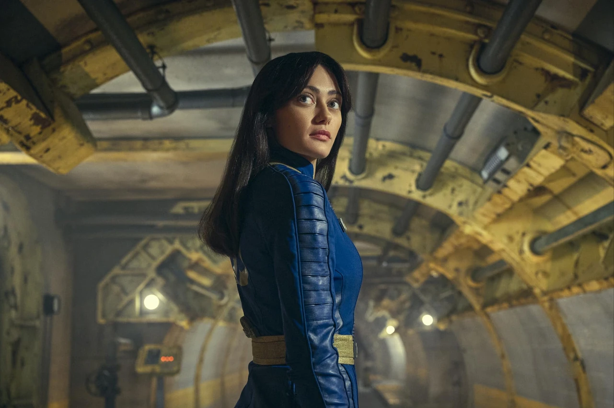


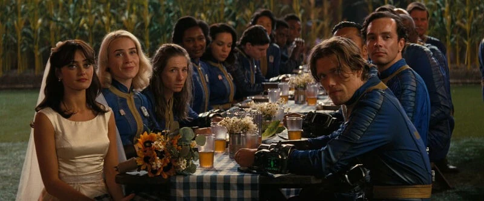
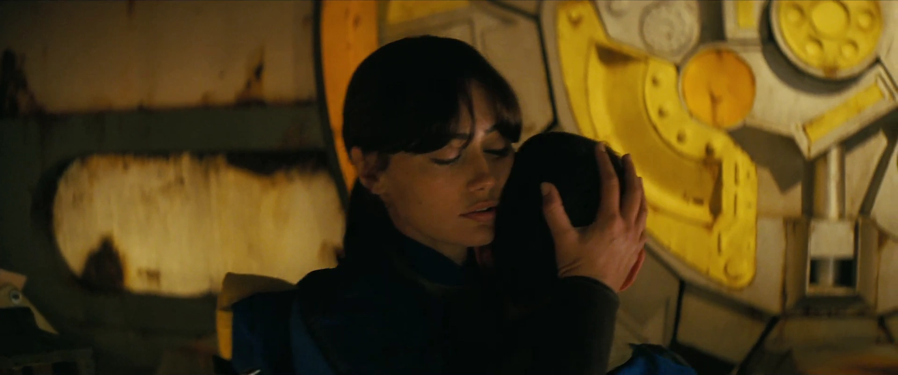

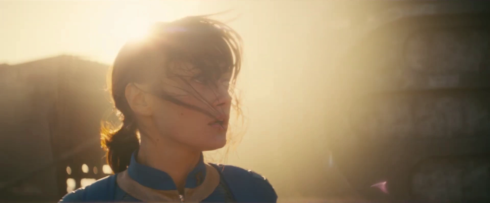

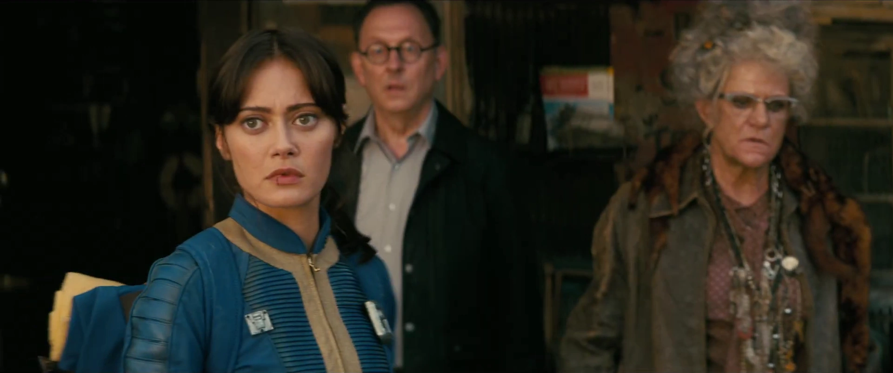

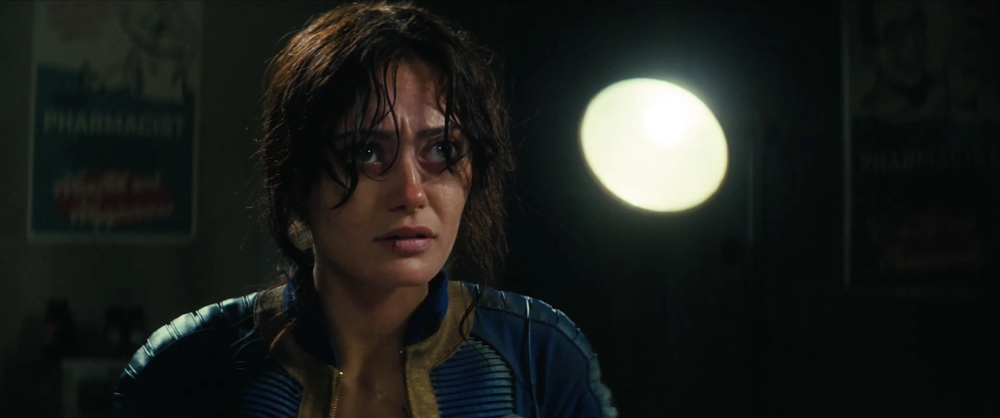


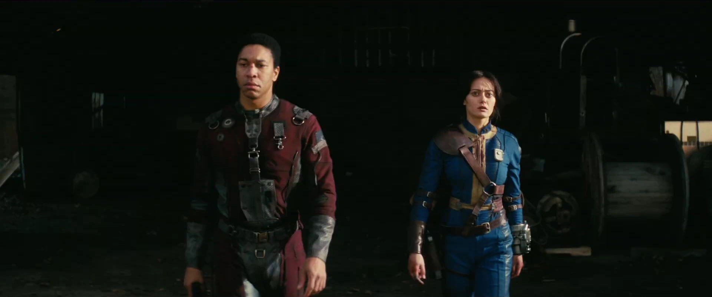
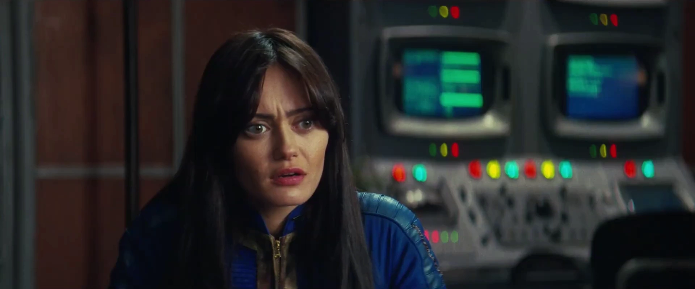

シーズン2


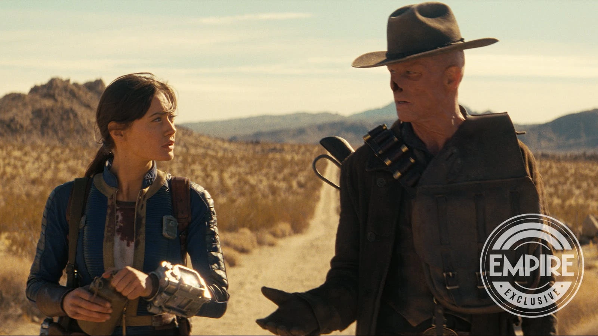


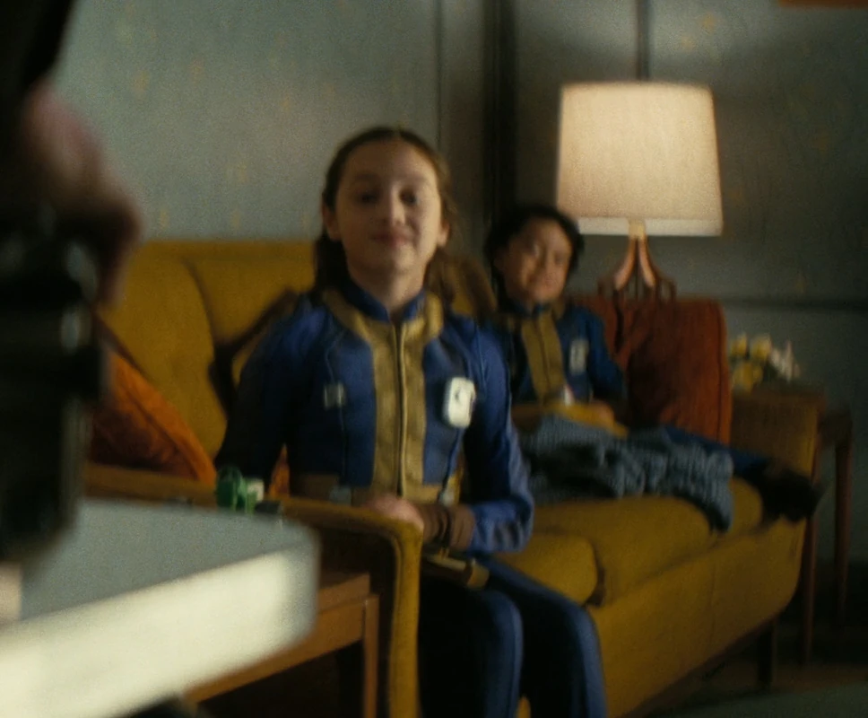


テーブルトップゲーム
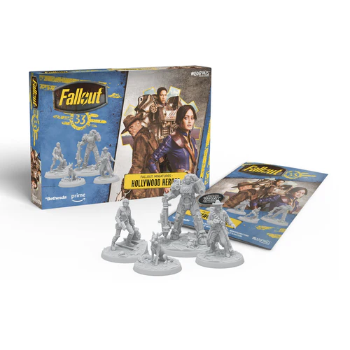
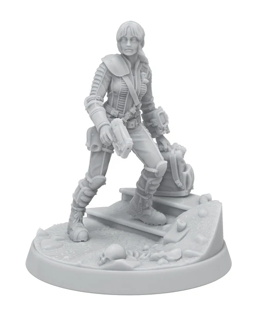
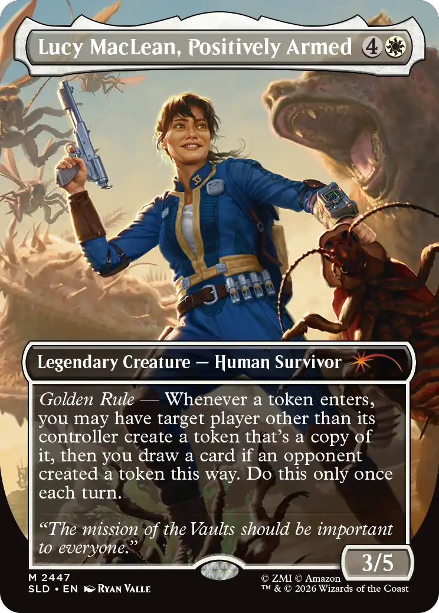
Fallout TVシリーズの主人公ルーシー・マクレーンについての記事です。
正直、こんなに長い記事になるとは思ってませんでした……！
シーズン1からシーズン2にかけてのルーシーの成長が本当に素晴らしいんですよね。
Vault 33で黄金律を信じて育った世間知らずの少女が、ウェイストランドの残酷な現実に直面して、理想と折り合いをつけていく過程がもう胸に刺さりまくります。
特にグールとの関係性の変化がたまりません。
最初は完全に敵対関係で、指を噛みちぎったり切り落としたりする壮絶なやりとりから始まって、シーズン2ではお互いに皮肉を言い合いながらも信頼関係が芽生えていくんです。
「黄金律、このクソ野郎」のセリフは本当に名言すぎて、何度聞いても鳥肌が立ちます〜。
シーズン2でのバファウト中毒のくだりも印象的でした。
薬の影響で大胆になったルーシーがフェラル・グールを楽しそうに殺していくシーンは、彼女の内面に潜む暴力性を垣間見せるようでゾクッとします。
でもその直後に、偽の店主を撃ち殺してしまって「自分が誰なのか分からない」と呟くシーンがあって……ここのエラ・パーネルの演技は本当に圧巻です。
そして最終的に父ハンクとの対決。
ルーシーが父のチップを首に埋め込んで、ハンクが自分で自分の記憶を消去するシーンは涙なしには見られません。
復讐でもなく、許しでもなく、ルーシーらしい「正義」の形で父との決着をつけるところが、彼女というキャラクターの魅力のすべてを凝縮しています。
マキシマスとの関係もずっとニヤニヤが止まらなくて！
離れている間もお互いを想い続けて、最後にラッキー38で再会するシーンは感動的すぎます。
「戦争が来る、それは自分のせいだ」「ウェイストランドへようこそ」って、もうこの締めくくりが完璧すぎて震えました。
ルーシー・マクレーン、Falloutの世界にこれ以上ないほど素晴らしい主人公を迎えたなと思います！
This article was created by translating and editing Lucy MacLean from Nukapedia: The Fallout Wiki.
Licensed under the Creative Commons Attribution-Share Alike License (CC BY-SA 3.0).
コミュニティ維持のため、寄付を受け付けております。
> COMMENTS